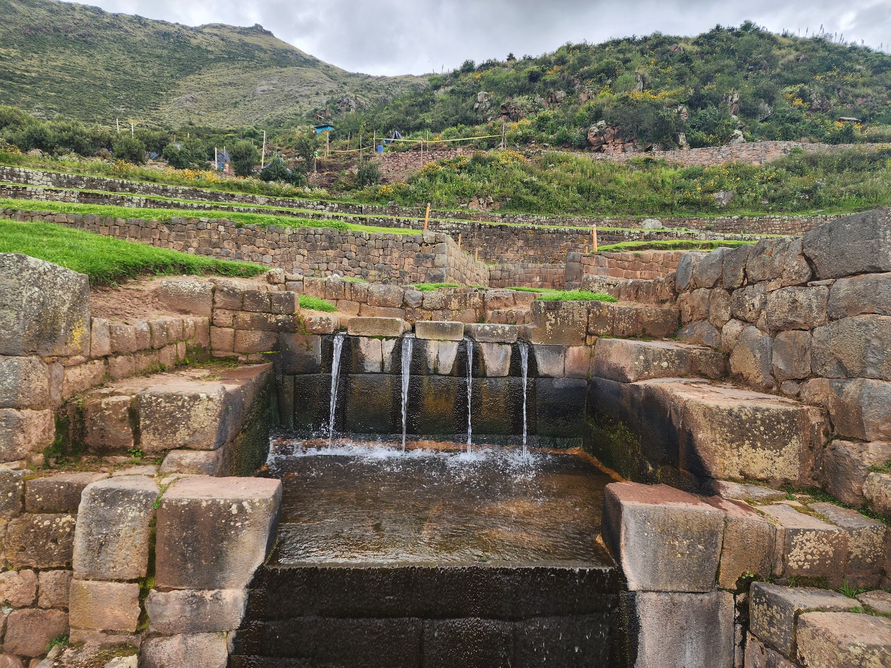
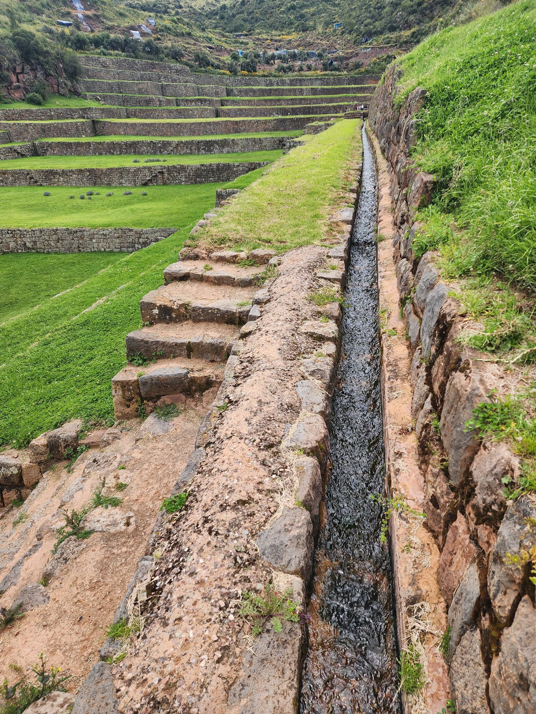
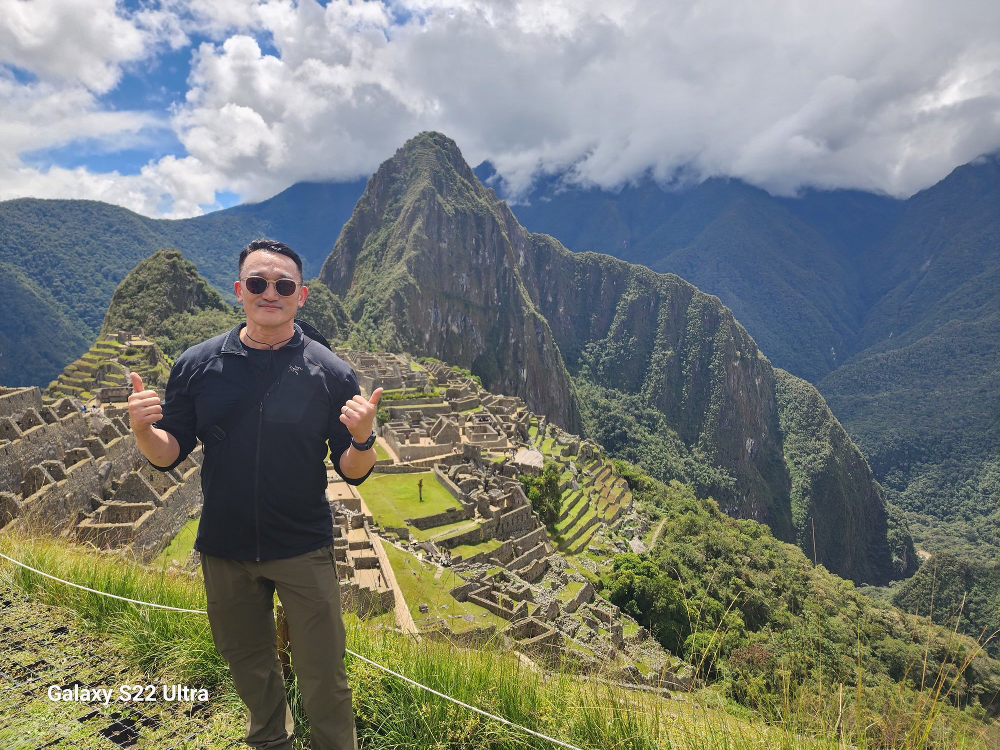

It all began with the canals of Ollantaytambo.
A few days earlier, on the way back from Machu Picchu, I had stepped off the train and spent the night in this town. At first I had thought I would simply pass through. A waystation between Cusco and Machu Picchu, where bus turns into train. But during that brief transfer, the alleys and stone streets of the village were so beautiful that I decided I had to stay one night on the way back. And the day after Machu Picchu, that is what I did.
Ollantaytambo is — less a ruin than an Inca city in which people still live. The deepest reach of the Sacred Valley. The town's stone streets and the foundations of its houses are Inca, and over them the whitewashed walls of the colonial period are layered, and over those a modern tin roof. Three eras of time folded into a single building. Tourists pass through, and so do llamas, and so do children.
And yet — what was strangest in this town was not a building or a ruin. It was the fact that water was flowing through the entire town.
Beside every stone street there is a stone canal — about two palms wide, about a hand-span deep. Through each one, clear water flows at a steady pace. The whole town sits atop a living lattice of water. A 500-year-old design.
And — the residents are still using this water today. In the morning, in an alley, a woman rinsed a broom in the canal. Around noon, a man washed his hands in the same canal. In the evening, a child played beside it. The water-channels carved by some artisan five hundred years ago carry the daily life of someone today. This is no museum. It is in active service.
The next morning, I crossed the central plaza of the town and climbed toward the ruins. There are records that the Inca emperor Pachacútec made this place his royal estate.¹ A site where the rich farmland of the Sacred Valley meets defensible terrain. I bought a ticket at the entrance and started up the steps.
I had not gone far when my feet stopped.
Beside the stairs, a small water channel was flowing. A canal cut from stone. The water was clear and cold, moving at a steady pace. Parallel to the steps, from above to below, the water was coming down with the staircase.
It was a canal cut by an Inca artisan five hundred years ago. And water was still flowing through it.
Higher up was the ceremonial water-channel of the ruins. The local explanation was striking. This stream was — designed in the Inca era for rituals of purification. And — for several centuries it has been flowing at almost the same volume. It does not shrink in drought, nor swell much in the rainy season. It is fed by an underground spring that supplies it at a steady rate.
I stood there a long time. Then I knelt and put my hand into the water. It was cold. Snowmelt from the mountain above, perhaps. Or springwater rising from somewhere deep in the earth. Either way, this water was following a path some hand made five hundred years ago, and now wetting my fingers.
In that moment, a single question filled my head.
Why is this water still flowing?
Most of the great aqueducts of the Roman Empire stopped flowing for fifteen hundred years after the fall of the Western Empire. Apart from Constantinople, medieval European cities never restored Roman-style water supply throughout the Middle Ages. Even the symbolic Aqua Claudia was destroyed and went dry. Restoration began in the Renaissance, but most remained as museum ruins.
The Inca canals of the same era — what became of them?
They are still flowing.
At Ollantaytambo. At Machu Picchu. At Pisac. And at the Tipón I am about to visit. The state collapsed, the religion changed, the empire vanished — but the water did not stop.
This difference cannot be coincidence. There is something fundamentally different in the design itself. I wanted to know what it was. So today, I head for Tipón.

About twenty-five kilometers southeast of Cusco. Near the town of Oropesa. Tipón is a site most tourists do not visit. There is no train as there is for Machu Picchu, and group tour buses are scarce. Early in the morning I took a colectivo (a shared van) to Oropesa, then hired a local taxi up to the entrance of the ruins.
The driver paused for a moment.
"Not many foreigners come for these ruins."
"So it seems."
"But engineers come, sometimes. From America, Japan. They look at the canals for hours, take photographs."
Engineers. That single phrase explains a great deal. The fact that the people who first and most deeply grasped what Tipón is were not archaeologists but practicing hydraulic engineers. The most important of them was Kenneth R. Wright.
Wright was a hydraulic engineer based in Colorado. A working engineer who had designed major dams, water supply systems, and irrigation projects. He had no professional connection to the Inca. Then, in 1994, he and his wife Ruth Wright visited Peru and saw the water system at Machu Picchu. He took a professional shock.²
"It was as if I were looking at a textbook of modern civil engineering," he later wrote. From that year on, Wright began studying Inca hydraulic engineering systematically. He returned several times to Machu Picchu, Tipón, and Moray, and with the permission of the Peruvian government carried out field measurements. His research was published in three professional volumes in the 2000s.³ One of them, brought out in 2006 by the press of the American Society of Civil Engineers (ASCE), is Tipon: Water Engineering Masterpiece of the Inca Empire.
The word "masterpiece" is not used lightly, especially in the language of practicing engineers. Yet Wright placed that word in the title of the book. What had he seen, that he chose it.
I got out of the car. Past the ticket booth, up a footpath. A few minutes later, my view opened all at once.
What I saw first were the terraces. Thirteen great steps descending along a small valley. From top to bottom the drop was about fifty meters. On every terrace dark green grass was growing, and through the middle of them ran several braided water channels.⁴
The first impression was a quiet beauty. No vast fortress, no ornate decoration — a landscape of engineering faithful to function.
I climbed up. Above the topmost terrace stood a small stone structure. From two arch-shaped openings, water poured out and flowed into the channel below. This was the outlet of the dual-source system that Wright described in detail.
Tipón draws its water from two completely different supplies.⁵
The first is the Río Pukara. Surface water from the mountain to the north. Water diverted from the valley creek runs down through the canals. In the rainy season (November–April) it is plentiful; in the dry season it is reduced.
The second is a permanent spring. A spring rising from an underground vein in the mountain just above Tipón. Its flow rate is nearly constant year-round. About 1,100 liters per minute. It holds even in drought.⁶
The combination of these two sources is the key to Tipón's stability. Surface water alone could dry up; spring water alone is bounded in volume. The Inca engineers combined the two, securing a steady flow regardless of season.
One of the basic principles of modern water-resource engineering is precisely this. "Stabilization of supply through redundant sources." The principle was formally theorized in the twentieth century. The Inca were already practicing it five hundred years earlier.

I started to walk down beside the water. What happens if you let a fifty-meter drop occur as a single waterfall? The energy of the water striking the bottom is enormous. Erosion accelerates, and the structure is damaged within years. Even in modern dams, this problem of "energy dissipation" is a central engineering challenge.
Tipón solves it by a stepped distribution across thirteen terraces.
Each terrace is about three to four meters high. When the water falls from one tier to the next, the drop is limited to that height. The water that hits the bottom flows horizontally to the inlet of the next tier. Repeating this thirteen times, the total fifty-meter drop is divided into thirteen smaller falls.
More refined still is the design at each fall. At every drop point there is a stilling basin. The energy of the falling water is dispersed within this basin into turbulence. Vortices form, energy is converted to heat. As a result, the water leaving the basin is calm and slow.
This is a standard technique of modern dam design. The same principle appears in the design documents of the Hoover Dam (1935). Only — five hundred years before Hoover, the Inca had already realized this principle in stone.
I stayed at several drop points for a long time, watching, again and again, the water descend from one tier and enter the next channel. At no fall did the water splash, or scour the wall. Perfect turbulence control. Sustained for five hundred years.
Going down through the terraces you reach the Main Fountain. The most ornate hydraulic structure at the center. Four streams of water emerge simultaneously from a stone arch. Each stream falls along its own dedicated stone channel into the basin below. The flow is smooth, and the speed and form of each stream are precisely uniform.
In this fountain is hidden the secret Wright spent his life trying to interpret.
In modern fluid mechanics there is the concept of the Froude number (Fr). It is a measure of whether the flow is "fast or slow." If the Froude number is less than one, the flow is "subcritical" — slow and smooth. Greater than one, "supercritical" — fast and rough. And at exactly one, the water is in "critical flow" — at once the most stable and the most efficient state.⁷
The four streams of the Main Fountain are designed close to critical flow.⁸ This is no accident. The cut of the stone, the width of the channel, the drop of the water — all of these variables combine to produce exactly this flow. The streams do not waver, do not entrain air, do not strike the stone walls.
The concept of the Froude number was formalized in the nineteenth century by the British naval engineer William Froude. Before that, people could roughly observe whether flow was fast or slow, but could not define the critical state mathematically. And yet the Inca engineers, without formula, with only experience and observation and repeated adjustment, fixed this state in stone.
I sat for a long time before the Main Fountain. The streams kept falling. An unchanging rhythm. Five minutes, ten, fifteen. Not a single droplet strayed from its arc.
The last wonder of Tipón is that the water is not wasted.
The water past the Main Fountain collects in a basin below. It does not end there. There is a drain at the bottom of the basin, and from that drain the water leaves into the next channel. Following that channel, it becomes irrigation water for the lower terrace. As crops grow on that terrace, what remains again flows down to the next.
From above, downward. Ceremonial water becomes agricultural water; agricultural water flows again and returns to natural water downstream.
There is no sewage.
This is what I want to underscore. In modern cities, water supply and wastewater are separated. Water you drink is destined for the sewer. The sewer leads to a treatment plant before discharge into a river. A great share of energy and cost is poured into the disposal of this "waste water."
The Inca did not have such a concept. Water once used was used for another purpose, and another, and finally returned to the earth. Water flows and is reborn many times. This concept was the basic premise of design.
This is not efficiency. It is philosophy. To not see water as a "resource." Water was not resource but being. Not something used and discarded, but something flowed alongside. This will be the central theme of chapter four; here, the circulation system at Tipón is the material evidence of that philosophy.

After the four wonders of Tipón, my mind returned to Machu Picchu, which I had visited a few days before.
Machu Picchu is far more famous than Tipón. It is often counted among the seven wonders of the world. But the reason for its fame is mostly its architecture and landscape. The photographs Hiram Bingham published after his "rediscovery" in 1911 — a stone city floating above a deep gorge — have become the focus of tourism.
From Wright's perspective, however, the true wonder of Machu Picchu is its invisible hydraulic system.⁹
This city, built on a ridge at 2,430 meters above sea level, lies in a region with annual rainfall of about 2,000 millimeters. Yet in the dry season, it goes for months with almost no rain. To sustain a city in such extreme conditions, precise water management was essential.
The water source is a spring on the mountain south of the city. From that spring the water enters the city through a canal of about 749 meters. The mean grade of the canal is about 2.7 percent. Too steep and the water splashes; too gentle and it pools — a narrow optimum between the two. Inside the city, the water passes through sixteen consecutive stone fountains.
The first fountain is near the royal residential quarter. The cleanest water was used by the emperor. At the second fountain, the nobility; at the third, the priests; thereafter, in order, the water flowed down. The sixteenth and last fountain was for agriculture. The water used by everyone in the city ultimately flowed into the terraced fields below and grew the crops.
On the surface this is a hierarchical structure. The emperor receives the cleanest water. But seen from the perspective of the water's fate, it is circular. Water once used is not wasted, but passes on to the next use.
The same principle as at Tipón.
And the system at Machu Picchu has been operating for five hundred years.¹⁰ When Wright and his colleagues measured it in the late 1990s, all sixteen fountains were still discharging water at the designed flow rate. Without a single repair.
Why did the Inca focus so single-mindedly on water?
The simplest answer is geography. The Andes is a region of extreme uneven distribution of water. The western coast borders one of the world's driest deserts (the Atacama). East across the mountains is the Amazon rainforest. The high plateau between swings from flood to drought with the seasons.
To sustain an empire of millions in such conditions, the technique of managing water becomes a matter of survival. Without irrigation, neither potato nor maize will grow. Without flood control, cities are washed away. Every pre-Inca Andean civilization — Chavín, Moche, Wari — had developed hydraulic systems for this reason. The Inca were the apex of that tradition.
But geography alone does not explain everything.
Other civilizations under similar conditions also worked with water. But their methods differed. For example, the Chimú civilization on the northern coast built immense irrigation canals. Hundreds of kilometers of nearly straight canals carried water from rivers to fields. In sheer scale these systems were larger than the Inca's. Yet most Chimú canals were built against nature, running nearly straight from source to destination. The result demanded constant labor for maintenance, and when the political center collapsed the system collapsed with it. Chimú irrigation declined rapidly after the Inca conquest.¹¹
The Inca way was different. It followed the terrain. Canals bent along the contour lines of mountains. Fountains were placed where the natural slope permitted. Curve, not line. Companionship, not coercion.
This difference is more than technical. It is a difference in the fundamental concept of water.
In Quechua there is a word, yaku (yaku). It is generally translated as "water," but the meaning is broader. Yaku is living water. Water that flows, water that springs up, water that falls as rain, water that circulates as fluid in the body — all of these are yaku. And these are not separate things. They are different faces of one being.
The mother of yaku is Mamaqucha, mother of the sea. All water came from the sea and returns to the sea. The long journey between — evaporation, cloud, rain, stream, river, groundwater — is the life of yaku. Humans meet water in one stage of this life. Water passes through the human and continues its journey.
Within this worldview, "owning" water is conceptually impossible. Water is neither yours nor mine. It is yaku's. The human opens the way of yaku, uses the water that passes through, and returns it to the way of yaku.
This philosophy is embedded in the design of the canals. Tipón's dual sources, thirteen-tier energy dissipation, critical-flow fountains, circular structure — all of it is "design that respects the journey of water." Not blocking water, but negotiating with it.
In Ollantaytambo, I felt again something I have learned in many Indigenous communities. That the sense of water being alive is real. That this is not a literary metaphor, but practical knowledge. That depending on the relation, water answers differently. What grandmothers on the North American plains told me a few years ago, and what the canals of Ollantaytambo are saying now, were the same thing.
And now we come to the heart of this chapter.
The Inca Empire was politically broken after the Spanish conquest of 1533. After the last Inca emperor, Túpac Amaru, was publicly executed in 1572, the Inca state ceased officially to exist.¹² The religion was forcibly converted to Catholicism, the administration replaced by Spanish colonial systems, and even the language partially overwritten with Spanish.
And yet the water did not stop.
The canals of Tipón still flow. The sixteen fountains of Machu Picchu still work. Cold water still flows in the canal beside the steps of Ollantaytambo. When rain falls on the agricultural terraces of Pisac, drainage channels designed in the Inca era carry the rain away exactly as they did five hundred years ago.
Why have these things not collapsed?
I thought about this question for a long time at Tipón. The Roman aqueducts collapsed; the Inca canals survived. Both engineering accomplishments are extraordinary. Yet one became museum ruins after fifteen hundred years, while the other has been on active duty for five hundred.
The difference lies in the system of management.
Roman aqueducts could not be maintained without central authority. A massive system supplying water to whole cities. Thousands of slaves and engineers handled maintenance. The imperial government allotted infrastructure budgets, professional officials (the curator aquarum) supervised. When this system collapsed, so did the aqueducts. With the fall of the Western Empire in the fifth century, the water system of Rome fell with it.¹³
The Inca canals were different. Large systems like Tipón and Machu Picchu existed, but most of the irrigation system was managed at the level of local communities (the ayllu). Villagers maintained their own canals. Each year, before the rainy season began, they set a day for communal labor and cleaned the canals and repaired any damage. This communal labor was called faena or minka.¹⁴
This system worked independently of central power. Whether the Inca emperor died and Spanish conquerors seized Cusco or not, the village faena continued. As children grew into adults, and adults aged into grandparents, the custom of cleaning the canal was passed down generation by generation. Parents taught their children. "On this day we go to the canal. We clear the stones. We let the water run."
This practice continued through the Spanish colonial period, through the Peruvian republic, through the twentieth-century military regimes, and into the present democracy. Those who maintain the canals do not think they are tending a "ruin." It is simply their water.
This is the strength of distributed responsibility.
A centralized system collapses when the center collapses. That was the fate of Rome. Even the great Inca infrastructures — the megalithic walls of Sacsayhuamán, the royal road of the Qhapaq Ñan — declined after the fall of the empire. They required central management.
But the canals run without a center. Because they have many managers. Each village has its own steward of its own stretch. If one village falls apart, the others keep working. If part of a stretch is blocked, the rest still flows. The system is modular, and each module is self-sufficient.
Modern network theory calls this local resilience. The capacity of the system as a whole to absorb the failure of parts without collapsing. This principle was central in the design of the internet. One server dies, the network continues. The Inca canals embodied this principle five hundred years before the internet.
One more story has held me.
In thirty years of research at Tipón, Wright left one question unanswered. Where does the permanent spring of Tipón come from?
That it rises from an underground vein in the mountain above is known. But which watershed feeds the vein, how wide an area of rainfall it gathers, what underground path the water takes — all of this remains unclear. Wright's team made many measurements and tracings, but could not arrive at a precise answer. Even after Wright passed away in 2023, the precise source of Tipón's permanent spring remains a mystery.
I found this strangely beautiful.
Complete operation is possible without complete understanding.
We are raised within the premises of modern science: to control, you must understand; to operate, you must control. And yet Tipón's water has flowed for five hundred years, with no one fully understanding its source. How exactly the Inca engineers found that source, how they aligned the fountains so precisely with its location — that process, too, cannot be fully reconstructed. And yet — it works.
Is this not enormous wisdom? The humility of knowing we do not understand everything. The conviction that we can trust nonetheless. This balance may be at the foundation of Inca engineering.
It was afternoon by the time I left Tipón. The sun was still high, but the shadows were beginning to lengthen. One last time, I sat before the Main Fountain.
The four streams of water were still falling, unchanged. Five hundred years ago, in the early sixteenth century, some Inca artisan had cut this fountain. Probably several together. What the weather was like on the day of that work, what he ate for lunch, what he said to his family — I know none of it. I do not even know his name. But the flow his hands made is being carried on, in front of me, now.
This is the moment when engineering becomes ontology.
Technology is not merely a tool for solving problems. Technology is the material expression of how one treats the world. Rome's Aqua Claudia was the expression of a will to dominate nature. Vast arched bridges across valleys. Tunnels carved through mountains. The grand conquest of "bringing" a distant water source dozens of kilometers to the city. Engineering, yes — but at the same time a political declaration. "We rule nature."
Tipón is the opposite declaration. It does not dominate nature. It walks with nature. Following the slope of the terrain, respecting the nature of water, wasting no energy, returning the water once used. This too is engineering, but the worldview it speaks is utterly different.
"We are part of the world, and we flow with it."
The opposition between these two worldviews will run through the rest of this book. In chapter five we will compare the Roman aqueduct and the Inca canal in earnest. And we will trace how that contrast extends into modern Western thought as a whole — Descartes's dualism, the scientific revolution, colonialism, capitalism, and on into today's AI.
But before beginning that journey, I want to make one thing certain. An alternative is possible. And the alternative is not imagination. It is already operating, has been for five hundred years.
Tipón's water offers that proof every moment. To put your hand into the canal is not to touch history. It is to touch a philosophy that is still flowing.
At one point only the sound of the Main Fountain was audible. The other tourists had already gone. A ticket attendant glanced at me from a distance, then returned to her work. A bird worked through the grass on an upper terrace, looking for something.
I thought: if this place is a teacher, it is a silent one. It does not explain. It does not assert. It merely continues to be. If you come and look, you will see. If you do not come, you will not. Whether you come and leave, it will keep flowing here. Whether you have understood something or nothing.
In some sense this is the form of all real wisdom. It does not coerce. It waits. When the prepared person comes, it teaches quietly.
The rest of this book will deal with many things noisily. The violence of conquest, the extractions of neoliberalism, the new dilemmas of the AI era. In that noise, I want to remember the silence of Tipón. Some things are conveyed without being spoken. Not to lose that may be the whole of this journey.
The day was beginning to close. Before leaving the ruins to catch the colectivo, I looked back once more. All of Tipón was bathed in the gold of late afternoon. From above to below, the water was still flowing. It will flow whether I am there or not, whether anyone is there or not.
Five hundred years.
At the start of this chapter I carried away from a small canal in Ollantaytambo a single question. "Why is this water still flowing?" Now I see the outline of an answer. The answer is both technical and philosophical.
Technically, it is distributed design. Dual sources, stepped energy dissipation, critical flow, circular structure, communal management. These elements made resilience strong enough to survive the collapse of central power.
Philosophically, it is a different worldview. The view of water not as resource but as being. The attitude of accompanying nature rather than dominating it. The humility of accepting that the human is not the center of the world but a part of it.
And these two are inseparable. Technology is the materialization of worldview. The reason the Inca canals still flow after five hundred years is that they are the form-in-stone of the Inca attitude toward water. So long as that attitude lives, the water flows. And remarkably, that attitude — despite five hundred years of colonialism and republic and modernization — still lives in the villages of the Andean highlands. Each year the people gather to clean the canals. They do not say they are protecting an "Inca legacy." They simply work to keep the water flowing.
That is continuity.
In the next chapter I will look at the philosophy of this flow. The Sacred Valley as seen from Pisac's high terraces. What is visible from there is not only landscape. It is a cosmology. And at the center of that cosmology, always, is flowing water.
Yaku.
Living water.
¹ On the record that Ollantaytambo was the royal estate of Pachacútec see Jean-Pierre Protzen, Inca Architecture and Construction at Ollantaytambo (Oxford: Oxford University Press, 1993), pp. 23-30.
² On the circumstances of Kenneth and Ruth Wright's visit to Machu Picchu see Kenneth R. Wright and Alfredo Valencia Zegarra, Machu Picchu: A Civil Engineering Marvel (Reston, VA: ASCE Press, 2000), preface.
³ The three principal works are: Kenneth R. Wright and Alfredo Valencia Zegarra, Machu Picchu: A Civil Engineering Marvel (ASCE Press, 2000); Kenneth R. Wright, Tipon: Water Engineering Masterpiece of the Inca Empire (ASCE Press, 2006); Kenneth R. Wright, Ruth M. Wright, Alfredo Valencia Zegarra, and Gordon F. McEwan, Moray: Inca Engineering Mystery (ASCE Press, 2011).
⁴ On the dimensions and structure of the central terrace section at Tipón see Wright, Tipon, chapter 2.
⁵ For a detailed analysis of Tipón's dual-source system, see ibid., chapter 3.
⁶ Measurements of the permanent spring's flow are in ibid., pp. 43-48. Wright's team confirmed that variation with season and rainfall is very small.
⁷ On the concept of the Froude number and critical flow, see standard hydraulics texts, e.g., Ven Te Chow, Open-Channel Hydraulics (New York: McGraw-Hill, 1959).
⁸ On the critical-flow design of Tipón's Main Fountain see Wright, Tipon, chapter 4. Wright confirmed by field measurement that the Froude numbers of the four streams were calibrated very near unity.
⁹ For a comprehensive analysis of the Machu Picchu hydraulic system see Wright and Valencia Zegarra, Machu Picchu: A Civil Engineering Marvel, throughout.
¹⁰ On the present operating state of Machu Picchu's canals see ibid., conclusion.
¹¹ On Chimú irrigation and its decline see Michael E. Moseley, The Incas and Their Ancestors, rev. ed. (London: Thames and Hudson, 2001), chapter 9.
¹² On the execution of Túpac Amaru (September 1572) and the formal end of the Inca state see John Hemming, The Conquest of the Incas (New York: Harcourt Brace, 1970), pp. 448-454.
¹³ On the process of Roman aqueduct collapse see A. Trevor Hodge, Roman Aqueducts and Water Supply, 2nd ed. (London: Duckworth, 2002), chapter 9.
¹⁴ On Andean communal-labor traditions of faena and minka see Paul H. Gelles, Water and Power in Highland Peru: The Cultural Politics of Irrigation and Development (New Brunswick: Rutgers University Press, 2000), pp. 30-45.